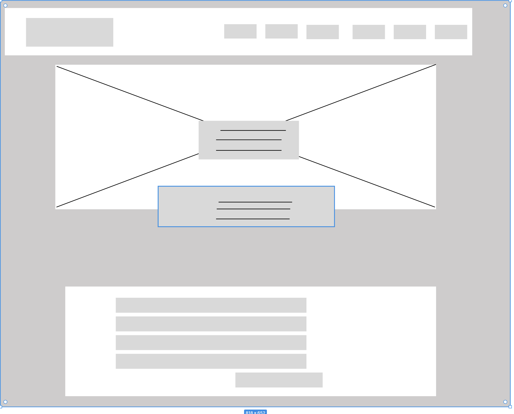
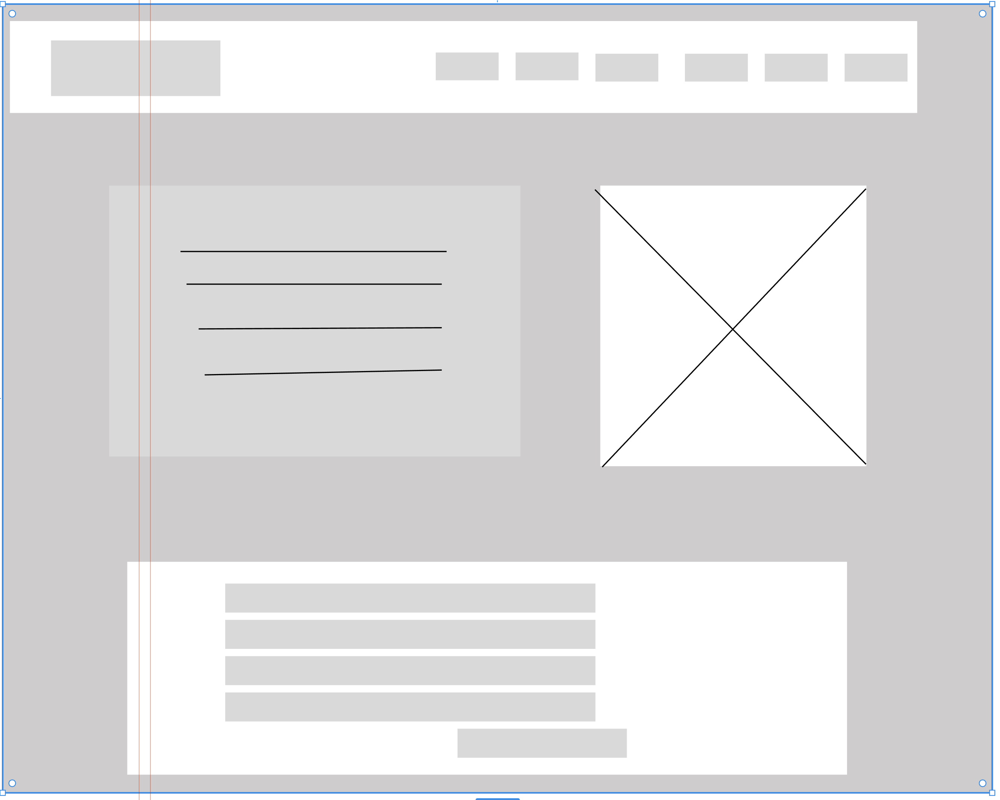
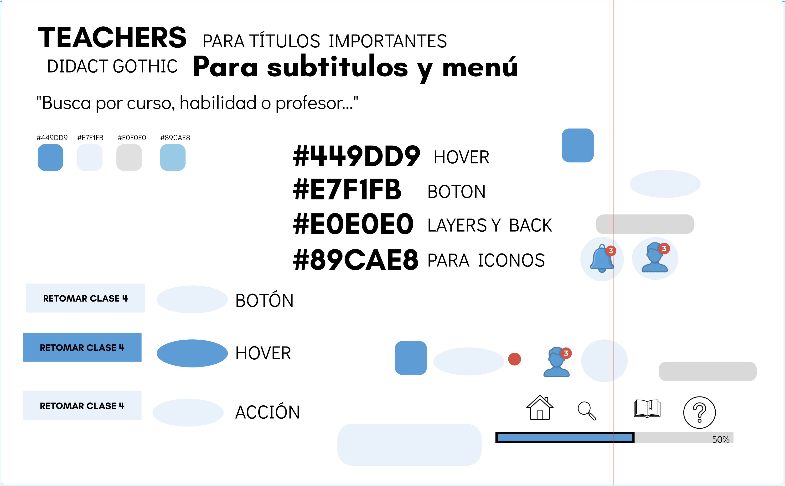
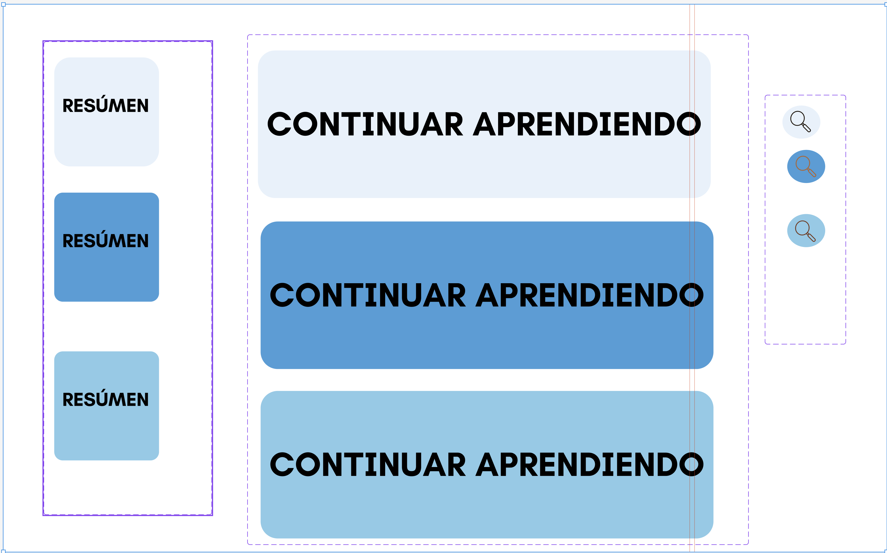
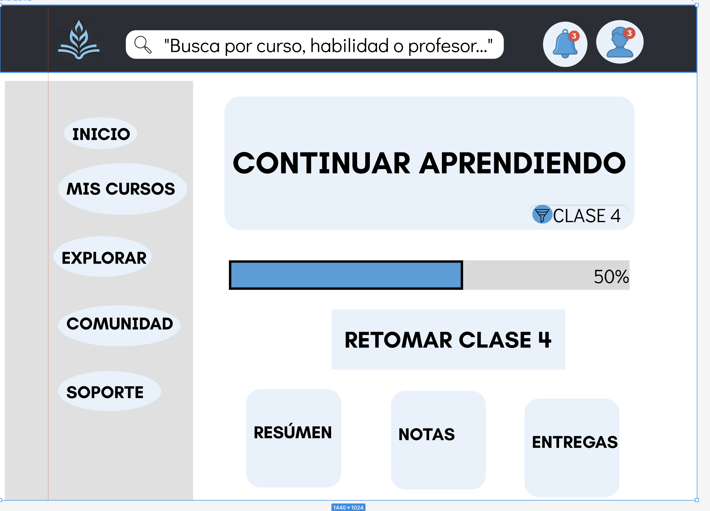
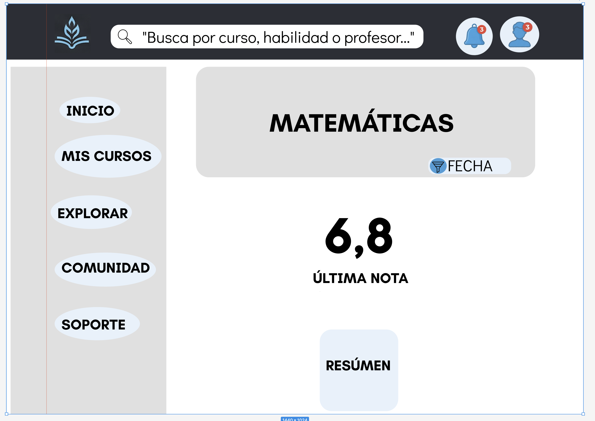
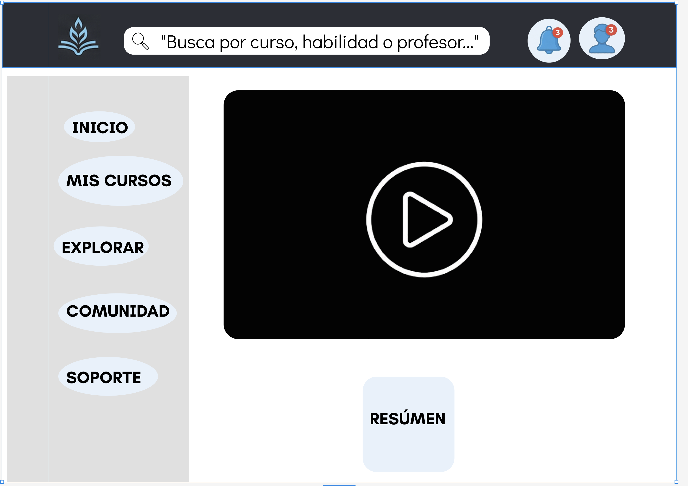
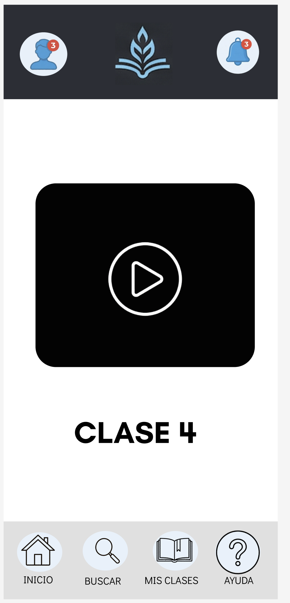

Rediseño Plataforma Educativa IT
Rediseño integral de arquitectura de información (AI) y UI.
Benchmarking Competitivo: Análisis profundo de plataformas líderes: Coursera (jerarquía profunda y robusta), Khan Academy (rutas guiadas por audiencia) y Platzi (sistema de progreso continuo). Con estos hallazgos, se diseñó una Taxonomía Híbrida facetada que une la estructura autoritativa de Coursera con la fluidez y reducida carga cognitiva de Platzi.
Nueva Arquitectura: Reorganización del inventario de servicios y nomenclatura, estructurando filtros por Áreas de Estudio, Dificultad y Formatos:
| URL / Ubicación | Título Actual | Acción | Título Sugerido | Justificación |
|---|---|---|---|---|
| /home | Inicio | Mantener | Inicio | Estándar de la industria. |
| /cursos-generales | Cursos Generales | Modificar | Explorar Catálogo | "Generales" es ambiguo. "Explorar" invita a la acción. |
| .../tecn | Área de Sistemas | Modificar | Tecnología y Desarrollo | Más actual, alineado con industria. |
| .../art | Cosas Visuales | Eliminar/Unir | Diseño y UX/UI | El término original carecía de profesionalismo. |
| /mi-perfil/clases | Mis cosas | Modificar | Mi Ruta de Aprendizaje | Enfocado en el progreso, no un simple listado. |
| /ayuda | FAQs | Mantener | Centro de Ayuda | Término universal e intuitivo. |
Evaluación Heurística & Soluciones Aplicadas:
- Prevención de errores: Inclusión de buscadores con texto predictivo para evitar pantallas con "0 resultados".
- Diseño Estético: Reducción drástica del ruido visual eliminando banners gigantes y adoptando el patrón F.
- Visibilidad del estado: Barras de progreso implementadas directamente en el Hero para retomar la clase en 1 clic.
Grilla de Construcción (Wireframes): Sistema fluido de 12 columnas para Desktop (menú + contenido) y 4 columnas (100% width) para entorno Móvil.


Validación y Usabilidad: Prueba moderada con 5 usuarios. El éxito al utilizar la función "Continuar aprendiendo" fue del 100% (1 clic en Desktop), con una facilidad percibida de 4.8 sobre 5.0.
Sistema de Diseño y Prototipo de Alta Fidelidad (UI):
- Código Visual Estricto: El color de acento principal se reservó exclusivamente para botones de "Llamado a la Acción" (Call to Actions) como "Retomar clase", para guiar la atención instintivamente.
- Consistencia y Estándares: Uso de íconos universales, reemplazando botones dispares por una estructura cohesiva (desaparecieron los botones cuadrados azules mezclados con circulares verdes).
- Estados del Sistema: Diseño de estados inactivos (disabled) en tono gris para cursos que requieren nivel previo, mitigando frustraciones antes de la interacción.





